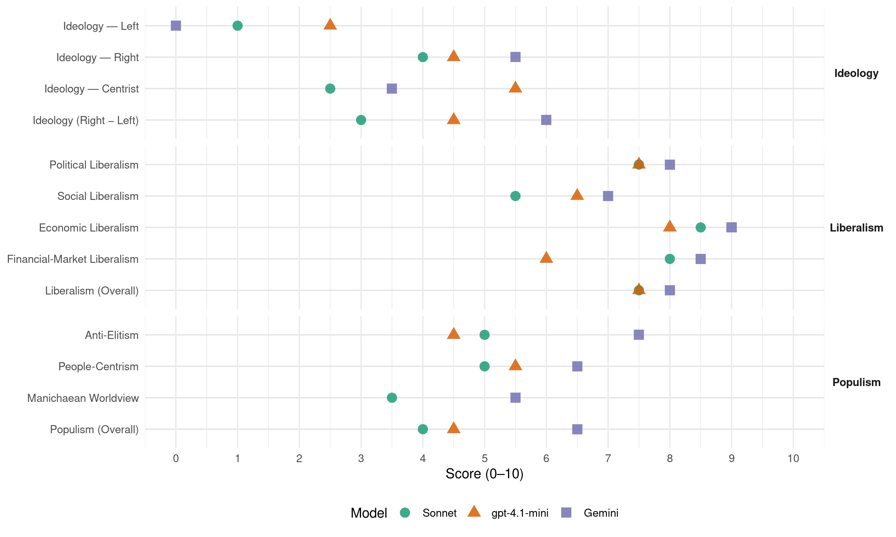

FrP (Norway, 1977)
manifesto_id 12951_197709
Get full text: This site shows derived annotations and short verbatim quotes only. The full manifesto text is © Manifesto Project / WZB — obtain it via manifesto-project.wzb.eu using the manifesto_id above.
Headline scores
| Dimension | Sonnet | gpt-4.1-mini | Gemini |
|---|---|---|---|
| Populism (Overall) | 4.0 | 4.5 | 6.5 |
| Anti-Elitism | 5.0 | 4.5 | 7.5 |
| People-Centrism | 5.0 | 5.5 | 6.5 |
| Manichaean Worldview | 3.5 | – | 5.5 |
| Ideology (Right − Left) | 3.0 | 4.5 | 6.0 |
| Liberalism (Overall) | 7.5 | 7.5 | 8.0 |
| Political Liberalism | 7.5 | 7.5 | 8.0 |
| Social Liberalism | 5.5 | 6.5 | 7.0 |
| Economic Liberalism | 8.5 | 8.0 | 9.0 |
| Financial-Market Liberalism | 8.0 | 6.0 | 8.5 |
Evidence per dimension
Economic Liberalism
Gemini · score 9.0 · verified · chunk 1
“legge forholdene til rette for privat virksomhet”
Forenkle virkefeltet, innskrenke forbudene, påbudene, restriksjonene og kontrollen. Redusere statsdrift og legge forholdene til rette for privat virksomhet.
Gemini · score 9.0 · verified · chunk 2
“lov om tilbud og etterspørsel får virke”
Handelen foregår best om loven om tilbud og etterspørsel får virke. Detaljerte pris- og fortjenestereguleringer
gpt-4.1-mini · score 9.0 · verified · chunk 1
“FP’s hovedformål er: Sterk nedsettelse av skatter, avgifter og offentlige inngrep.”
FP’s hovedformål er: Sterk nedsettelse av skatter, avgifter og offentlige inngrep. FP startet som et protestparti. Protest er fortsatt nødvendig fordi vi ser i Norge en stat vokse frem, kjennetegnet av omseggripende sosialisering og målbevisst innføring av statskapitalisme.
gpt-4.1-mini · score 7.0 · verified · chunk 2
“FP er prinsipielt imot direkte statlig engasjement i industrien”
Avgifts- og skattenivå må ikke være så høyt at derav følgende lønnskrav fører til at bedriftene ikke lenger kan konkurrere på eksportmarkedene. Samfunnets økonomiske krav til bedriftene må holdes på et slikt nivå at ikke den økonomiske bæreevne og dermed industriens arbeidsplasser trues. FP er prinsipielt imot direkte statlig engasjement i industrien.
Sonnet · score 9.0 · verified · chunk 1
“Skatt på arbeidsinntekt avskaffes”
Skatt på arbeidsinntekt avskaffes for at alle borgere selv kan disponere sin lønn og bli i stand til å stå på egne ben.
Sonnet · score 8.0 · verified · chunk 2
“Handelen foregår best om loven om tilbud og etterspørsel”
Handel Handelen foregår best om loven om tilbud og etterspørsel får virke. Detaljerte pris- og fortjenestereguleringer fra det offentliges side må bli opphevet.
Financial-Market Liberalism
Gemini · score 8.0 · verified · chunk 1
“kapitalsirkulasjon via finansieringsinstitusjoner”
Forholdene skal legges til rette for effektiv kapitalsirkulasjon via finansieringsinstitusjoner som kan sikre distriktene
Gemini · score 9.0 · verified · chunk 2
“overføres til det allerede eksisterende private bank- og kredittvesen”
nedtrappes og deres virksomhet overføres til det allerede eksisterende private bank- og kredittvesen. Dette vil redusere tendensen
gpt-4.1-mini · score 6.0 · verified · chunk 1
“Forholdene skal legges til rette for effektiv kapitalsirkulasjon via finansieringsinstitusjoner som kan sikre distriktene og næringslivet nødvendig kapital.”
Pkt. 11: FP erkjenner at visse fellesoppgaver må løses av samfunnsorganer som stat, fylker og kommuner. Det er påkrevet å definere og avgrense disse oppgaver for at offentlig virksomhet kan bli begrenset til disse. … 7. Forholdene skal legges til rette for effektiv kapitalsirkulasjon via finansieringsinstitusjoner som kan sikre distriktene og næringslivet nødvendig kapital.
gpt-4.1-mini · score 6.0 · verified · chunk 2
“Bank- og kredittservice utføres best av ordinære banker og kredittinstitusjoner”
Myndighetene skal i første rekke befatte seg med lovgivning om kredittinsitusjonene og dertil kontroll med at lover og regler blir fulgt. Bank- og kredittservice utføres best av ordinære banker og kredittinstitusjoner. Staten skal påse at det er reell konkurranse mellom disse slik at et mest mulig rasjonelt system blir utviklet.
Sonnet · score 8.0 · verified · chunk 1
“effektiv kapitalsirkulasjon via finansieringsinstitusjoner”
Forholdene skal legges til rette for effektiv kapitalsirkulasjon via finansieringsinstitusjoner som kan sikre distriktene og næringslivet nødvendig kapital.
Sonnet · score 8.0 · verified · chunk 2
“reell konkurranse mellom disse”
Staten skal påse at det er reell konkurranse mellom disse slik at et mest mulig rasjonelt system blir utviklet. Forslag om banksosialisering avvises.
Political Liberalism
Gemini · score 8.0 · verified · chunk 1
“verne om de rettigheter Grunnloven sikrer”
FP vil verne om de rettigheter Grunnloven sikrer den enkelte borger: Eiendomsrett, næringsfrihet, personlig frihet
Gemini · score 8.0 · verified · chunk 2
“fare for det demokratiske styresett”
tilliten til myndighetene. Dette utgjør en stor fare for det demokratiske styresett. Den onde sirkel som er
gpt-4.1-mini · score 8.0 · verified · chunk 1
“FP vil verne om de rettigheter Grunnloven sikrer den enkelte borger: Eiendomsrett, næringsfrihet, personlig frihet, trosfrihet, trykkefrihet, således også rett til frimodige ytringer om statsstyrelsen.”
Pkt. 3: FP vil verne om de rettigheter Grunnloven sikrer den enkelte borger: Eiendomsrett, næringsfrihet, personlig frihet, trosfrihet, trykkefrihet, således også rett til frimodige ytringer om statsstyrelsen. Bare samfunn som respekterer privat eiendomsrett, har vist seg å gi plass for personlig frihet og uavhengighet.
gpt-4.1-mini · score 7.0 · verified · chunk 2
“FP vil styrke politiet som må få skikkelig utdannelse og gode arbeidsforhold”
FP vil styrke politiet som må få skikkelig utdannelse og gode arbeidsforhold. Yrket må gjøres attraktivt for å øke tilgangen av dyktige folk. FP vil spesielt styrke politiavdelinger som arbeider med narkotikasaker og vinningsforbrytelser.
Sonnet · score 8.0 · verified · chunk 1
“Grunnlovens prinsipp om tredeling av statsmakten”
I særlig grad bygger FP på Grunnloven og Grunnlovens prinsipp om tredeling av statsmakten.
Sonnet · score 7.0 · verified · chunk 2
“FARE FOR DEMOKRATIET I ET OVERMEKTIG OFFENTLIG BYRÅKRATI”
FP SER EN FARE FOR DEMOKRATIET I ET OVERMEKTIG OFFENTLIG BYRÅKRATI. ANTALL OFFENTLIGE STILLINGER SØKES REDUSERT VED RASJONALISERING, REDUKSJON AV DEN OFFENTLIGE VIRKSOMHET, FORENKLING AV LOVVERK OG TRYGDESYSTEMER. FOLKEVALGTE ORGANER SKAL IKKE HA EN UFORHOLDSMESSIG STOR REPRESENTASJON AV OFFENTLIGE FUNKSJONÆRER.
Liberalism (Overall)
Gemini · score 8.0 · verified · chunk 1
“verne om de rettigheter Grunnloven sikrer”
FP vil verne om de rettigheter Grunnloven sikrer den enkelte borger: Eiendomsrett, næringsfrihet, personlig frihet
Gemini · score 8.0 · verified · chunk 2
“lov om tilbud og etterspørsel får virke”
Handelen foregår best om loven om tilbud og etterspørsel får virke. Detaljerte pris- og fortjenestereguleringer
gpt-4.1-mini · score 8.0 · verified · chunk 1
“FP vil verne om de rettigheter Grunnloven sikrer den enkelte borger: Eiendomsrett, næringsfrihet, personlig frihet, trosfrihet, trykkefrihet, således også rett til frimodige ytringer om statsstyrelsen.”
Pkt. 3: FP vil verne om de rettigheter Grunnloven sikrer den enkelte borger: Eiendomsrett, næringsfrihet, personlig frihet, trosfrihet, trykkefrihet, således også rett til frimodige ytringer om statsstyrelsen. Bare samfunn som respekterer privat eiendomsrett, har vist seg å gi plass for personlig frihet og uavhengighet.
gpt-4.1-mini · score 7.0 · verified · chunk 2
“FP vil styrke politiet som må få skikkelig utdannelse og gode arbeidsforhold”
FP vil styrke politiet som må få skikkelig utdannelse og gode arbeidsforhold. Yrket må gjøres attraktivt for å øke tilgangen av dyktige folk. FP vil spesielt styrke politiavdelinger som arbeider med narkotikasaker og vinningsforbrytelser.
Sonnet · score 8.0 · verified · chunk 1
“næringsfrihet, personlig frihet, trosfrihet, trykkefrihet”
FP vil verne om de rettigheter Grunnloven sikrer den enkelte borger: Eiendomsrett, næringsfrihet, personlig frihet, trosfrihet, trykkefrihet
Sonnet · score 7.0 · verified · chunk 2
“MOTVIRKE UMYNDIGGJØRELSEN AV ENKELTMENNESKET”
FP VIL MOTVIRKE UMYNDIGGJØRELSEN AV ENKELTMENNESKET VED Å REDUSERE PÅBUD OG RESTRIKSJONER TIL STRENGT NØDVENDIGE REGULERINGER.
Anti-Elitism
Gemini · score 8.0 · verified · chunk 1
“en funksjonær- og offentlige inngrepsstat”
Den eneste effektive måte å angripe en slik funksjonær- og offentlige inngrepsstat er å begrense dens inntekter.
Gemini · score 7.0 · verified · chunk 2
“HINDRE UTVIKLINGEN AV EN OVERMEKTIG STAT”
PRIORITERT OFFENTLIG AKTIVITET. FOR Å HINDRE UTVIKLINGEN AV EN OVERMEKTIG STAT SETTES ET TAK FOR OVERFØRINGENE
gpt-4.1-mini · score 7.0 · verified · chunk 1
“FP startet som et protestparti. Protest er fortsatt nødvendig fordi vi ser i Norge en stat vokse frem, kjennetegnet av omseggripende sosialisering og målbevisst innføring av statskapitalisme.”
FP’s hovedformål er: Sterk nedsettelse av skatter, avgifter og offentlige inngrep. FP startet som et protestparti. Protest er fortsatt nødvendig fordi vi ser i Norge en stat vokse frem, kjennetegnet av omseggripende sosialisering og målbevisst innføring av statskapitalisme. Denne stat gir oss en stadig strøm av offentlige inngrep, påbud og restriksjoner, håndhevet av et stadig voksende byråkrati.
gpt-4.1-mini · score 2.0 · verified · chunk 2
“FP er her i opposisjon til alle andre partier i Norge”
PRINSIPP - PROGRAMMETS PKT. 12 FP VIL AKTIVT OG ANSVARSBEVISST KANALISERE FOLKETS PROTEST MOT OFFENTLIGE INNGREP OG MOT URIMELIG SKATTE- OG AVGIFTSØKNINGER PÅ BEKOSTNING AV PRIVAT INITIATIV OG VIRKSOMHET. FP er her i opposisjon til alle andre partier i Norge, og partiet vil konsekvent fortsette med denne protestholdning.
Sonnet · score 6.0 · verified · chunk 1
“de gamle borgerlige partier vært like ansvarlige”
For denne utvikling har de gamle borgerlige partier vært like ansvarlige som de sosialistiske.
Sonnet · score 4.0 · verified · chunk 2
“FP er her i opposisjon til alle andre partier”
Dette har helt fra starten vært et hovedpunkt for FP’s politikk. FP er her i opposisjon til alle andre partier i Norge, og partiet vil konsekvent fortsette med denne protestholdning.
Ideology — Centrist
Gemini · score 3.0 · verified · chunk 1
“vender seg til dem som er enige”
FP vender seg to dem som er enige i at det må gjøres noe med dette.
Gemini · score 4.0 · verified · chunk 2
“KANALISERE FOLKETS PROTEST MOT OFFENTLIGE INNGREP”
FP VIL AKTIVT OG ANSVARSBEVISST KANALISERE FOLKETS PROTEST MOT OFFENTLIGE INNGREP OG MOT URIMELIG SKATTE-
gpt-4.1-mini · score 7.0 · verified · chunk 1
“FP, som arbeider på folkestyrets grunn, vil, for at demokratiet skal få en mulighet til å fungere, tilstrebe en desentralisering også av politisk makt og avgjørelser.”
Pkt. 6: FP, som arbeider på folkestyrets grunn, vil, for at demokratiet skal få en mulighet til å fungere, tilstrebe en desentralisering også av politisk makt og avgjørelser. Demokratiet har best sjanse til å fungere i små administrasjonsenheter i by og på land.
gpt-4.1-mini · score 4.0 · verified · chunk 2
“FP er således ikke noe alt-eller-intet-parti, men et parti som til enhver tid vil søke å få gjennomført så meget av sitt program som mulig”
FP er således ikke noe alt-eller-intet-parti, men et parti som til enhver tid vil søke å få gjennomført så meget av sitt program som mulig. Hittil har de andre partier i Norge vist liten interesse for samarbeid med FP til tross for at de, når det passer, sier at de vil bekjempe urimelige skatter, avgifter og offentlig byråkrati.
Sonnet · score 3.0 · verified · chunk 1
“FP startet som et protestparti”
FP startet som et protestparti. Protest er fortsatt nødvendig fordi vi ser i Norge en stat vokse frem
Sonnet · score 2.0 · verified · chunk 2
“FP er således ikke noe alt-eller-intet-parti”
FP er således ikke noe alt-eller-intet-parti, men et parti som til enhver tid vil søke å få gjennomført så meget av sitt program som mulig.
Ideology — Left
Gemini · score 0.0 · verified · chunk 1
“motarbeide åpenlyse og skjulte forsøk på sosialisering”
FP vil motarbeide åpenlyse og skjulte forsøk på sosialisering, unødig kapitalopphopning på Statens hender
Gemini · score 0.0 · verified · chunk 2
“MOTARBEIDE ÅPENLYSE OG SKJULTE FORSØK PÅ SOSIALISERING”
FP VIL MOTARBEIDE ÅPENLYSE OG SKJULTE FORSØK PÅ SOSIALISERING, UNØDIG KAPITALOPPHOPNING PÅ STATENS HENDER
gpt-4.1-mini · score 3.0 · verified · chunk 1
“FP vil motarbeide åpenlyse og skjulte forsøk på sosialisering, unødig kapitalopphopning på Statens hender og innføring av statskapitalisme og statsdrift.”
FP vil motvirke umyndiggjørelsen av enkeltmennesket ved å redusere påbud og restriksjoner til strengt nødvendige reguleringer. FP vil motarbeide åpenlyse og skjulte forsøk på sosialisering, unødig kapitalopphopning på Statens hender og innføring av statskapitalisme og statsdrift. Pkt. 14: Av hensyn til folkets trivsel vil FP arbeide for en forenkling av lovverk, skatte- og avgiftssystemer, avgifts- og subsidieordninger.
gpt-4.1-mini · score 2.0 · verified · chunk 2
“FP vil motarbeide åpenlyse og skjulte forsøk på sosialisering”
PRINSIPP - PROGRAMMETS PKT. 13 FP VIL MOTVIRKE UMYNDIGGJØRELSEN AV ENKELTMENNESKET VED Å REDUSERE PÅBUD OG RESTRIKSJONER TIL STRENGT NØDVENDIGE REGULERINGER. FP VIL MOTARBEIDE ÅPENLYSE OG SKJULTE FORSØK PÅ SOSIALISERING, UNØDIG KAPITALOPPHOPNING PÅ STATENS HENDER OG INNFØRING AV STATSKAPITALISME OG STATSDRIFT.
Sonnet · score 1.0 · verified · chunk 1
“produksjon og fordeling må overlates til privat initiativ”
FP går imot dette og mener at produksjon og fordeling må overlates til privat initiativ og virksomhet.
Sonnet · score 1.0 · verified · chunk 2
“FP er prinsipielt imot direkte statlig engasjement”
FP er prinsipielt imot direkte statlig engasjement i industrien. Ved virkelig valg mellom privat eller statlig virksomhet, skal privat virksomhet foretrekkes.
Ideology (Right − Left)
Gemini · score 7.0 · verified · chunk 1
“FP startet som et protestparti”
FP startet som et protestparti. Protest er fortsatt nødvendig fordi vi ser i Norge en stat vokse frem
Gemini · score 5.0 · verified · chunk 2
“MOTARBEIDE ÅPENLYSE OG SKJULTE FORSØK PÅ SOSIALISERING”
FP VIL MOTARBEIDE ÅPENLYSE OG SKJULTE FORSØK PÅ SOSIALISERING, UNØDIG KAPITALOPPHOPNING PÅ STATENS HENDER
gpt-4.1-mini · score 6.0 · verified · chunk 1
“FP startet som et protestparti. Protest er fortsatt nødvendig fordi vi ser i Norge en stat vokse frem, kjennetegnet av omseggripende sosialisering og målbevisst innføring av statskapitalisme.”
FP’s hovedformål er: Sterk nedsettelse av skatter, avgifter og offentlige inngrep. FP startet som et protestparti. Protest er fortsatt nødvendig fordi vi ser i Norge en stat vokse frem, kjennetegnet av omseggripende sosialisering og målbevisst innføring av statskapitalisme. Denne stat gir oss en stadig strøm av offentlige inngrep, påbud og restriksjoner, håndhevet av et stadig voksende byråkrati.
gpt-4.1-mini · score 3.0 · verified · chunk 2
“FP vil motarbeide åpenlyse og skjulte forsøk på sosialisering”
PRINSIPP - PROGRAMMETS PKT. 13 FP VIL MOTVIRKE UMYNDIGGJØRELSEN AV ENKELTMENNESKET VED Å REDUSERE PÅBUD OG RESTRIKSJONER TIL STRENGT NØDVENDIGE REGULERINGER. FP VIL MOTARBEIDE ÅPENLYSE OG SKJULTE FORSØK PÅ SOSIALISERING, UNØDIG KAPITALOPPHOPNING PÅ STATENS HENDER OG INNFØRING AV STATSKAPITALISME OG STATSDRIFT.
Sonnet · score 4.0 · verified · chunk 1
“Sterk nedsettelse av skatter, avgifter og offentlige inngrep”
FP’s hovedformål er: Sterk nedsettelse av skatter, avgifter og offentlige inngrep.
Sonnet · score 2.0 · verified · chunk 2
“MOTARBEIDE ÅPENLYSE OG SKJULTE FORSØK PÅ SOSIALISERING”
FP VIL MOTARBEIDE ÅPENLYSE OG SKJULTE FORSØK PÅ SOSIALISERING, UNØDIG KAPITALOPPHOPNING PÅ STATENS HENDER OG INNFØRING AV STATSKAPITALISME OG STATSDRIFT.
Ideology — Right
Gemini · score 6.0 · verified · chunk 1
“den vedtatte innvandringsstopp overholdes”
På bakgrunn av den truende arbeidsledighet må den vedtatte innvandringsstopp overholdes, og eventuell fremtidig innvandring
Gemini · score 5.0 · verified · chunk 2
“Beskyttelse mot import er nødvendig”
høy selvforsyningsgrad av mat. Beskyttelse mot import er nødvendig for å sikre en høy selvforsyningsgrad
gpt-4.1-mini · score 6.0 · verified · chunk 1
“FP bygger på Norges grunnlov og norsk kulturarv, utviklet gjennom århundrer ved gjensidig påvirkning mellom norsk tradisjon og de bærende hovedelementer i vestlig kulturarv med basis i et kristent livssyn.”
Pkt. 1: FP bygger på Norges grunnlov og norsk kulturarv, utviklet gjennom århundrer ved gjensidig påvirkning mellom norsk tradisjon og de bærende hovedelementer i vestlig kulturarv med basis i et kristent livssyn. FP’s holdning til samfunn, skole, kulturliv og sentrale samfunnsinstitusjoner har som utgangspunkt det verdifulle i norsk historisk arv, norsk livsstil, språk og tradisjoner.
gpt-4.1-mini · score 3.0 · verified · chunk 2
“FP går inn for at allierte styrker skal tillates stasjonert på norsk jord alt i fredstid”
FP går inn for at allierte styrker skal tillates stasjonert på norsk jord alt i fredstid, slik at alliert hjelp vil være i Norge alt fra krigens første dag, og slik at den som angriper Norge, automatisk vil komme i krig med USA, Canada, Storbritannia, Tyskland, o.s.v.
Sonnet · score 5.0 · verified · chunk 1
“vedtatte innvandringsstopp overholdes”
På bakgrunn av den truende arbeidsledighet må den vedtatte innvandringsstopp overholdes, og eventuell fremtidig innvandring må nøye vurderes.
Sonnet · score 3.0 · verified · chunk 2
“FP ØNSKER ET STERKT FORSVAR MED EN LIKEVERDIG TILKNYTNING”
FP ØNSKER ET STERKT FORSVAR MED EN LIKEVERDIG TILKNYTNING TIL VÅRE ALLIERTE I NATO. FORSVARET MÅ VÆRE TROVERDIG OG EFFEKTIVT.
Manichaean Worldview
Gemini · score 6.0 · verified · chunk 1
“nærmer seg en ren inntektsplyndring”
skatter og avgifter, som i dag har nådd en slik høyde at det faktisk nærmer seg en ren inntektsplyndring.
Gemini · score 5.0 · verified · chunk 2
“formyndermentalitet som hører hjemme i en totalitær stat”
representerer en formyndermentalitet som hører hjemme i en totalitær stat. Lov om kontroll med markedsføring
gpt-4.1-mini · score 5.0 · mixed · chunk 1
“FP vil motarbeide åpenlyse og skjulte forsøk på sosialisering, unødig kapitalopphopning på Statens hender og innføring av statskapitalisme og statsdrift.”
FP vil motvirke umyndiggjørelsen av enkeltmennesket ved å redusere påbud og restriksjoner til strengt nødvendige reguleringer. FP vil motarbeide åpenlyse og skjulte forsøk på sosialisering, unødig kapitalopphopning på Statens hender og innføring av statskapitalisme og statsdrift. Pkt. 14: Av hensyn til folkets trivsel vil FP arbeide for en forenkling av lovverk, skatte- og avgiftssystemer, avgifts- og subsidieordninger.
Sonnet · score 4.0 · verified · chunk 1
“omseggripende sosialisering og målbevisst innføring av statskapitalisme”
vi ser i Norge en stat vokse frem, kjennetegnet av omseggripende sosialisering og målbevisst innføring av statskapitalisme.
Sonnet · score 3.0 · verified · chunk 2
“FARE FOR DEMOKRATIET I ET OVERMEKTIG OFFENTLIG BYRÅKRATI”
FP SER EN FARE FOR DEMOKRATIET I ET OVERMEKTIG OFFENTLIG BYRÅKRATI. ANTALL OFFENTLIGE STILLINGER SØKES REDUSERT VED RASJONALISERING
People-Centrism
Gemini · score 7.0 · verified · chunk 1
“kanalisere folkets protest mot offentlige inngrep”
FP vil aktivt og ansvarsbevisst kanalisere folkets protest mot offentlige inngrep og mot urimelige skatte- og avgiftsøkninger
Gemini · score 6.0 · verified · chunk 2
“KANALISERE FOLKETS PROTEST MOT OFFENTLIGE INNGREP”
FP VIL AKTIVT OG ANSVARSBEVISST KANALISERE FOLKETS PROTEST MOT OFFENTLIGE INNGREP OG MOT URIMELIG SKATTE-
gpt-4.1-mini · score 8.0 · verified · chunk 1
“FP vil at de ansatte skal ha en reell innflytelse på velferdstiltak, arbeidsrutiner, sikringstiltak og beskyttelse mot arbeidsskader.”
I et demokrati, basert på alminnelig stemmerett, må en rettferdig valgordning sikre alle stemmeberettigede samme innflytelse ved valg til storting og andre folkevalgte organer, som fylkesting og kommunestyrer. FP vil at de ansatte skal ha en reell innflytelse på velferdstiltak, arbeidsrutiner, sikringstiltak og beskyttelse mot arbeidsskader. Bedriftenes forretningsmessige ledelse må imidlertid overlates til den ansvarlige ledelse og det ansvarlige styre.
gpt-4.1-mini · score 3.0 · verified · chunk 2
“FP er et parti som til enhver tid vil søke å få gjennomført så meget av sitt program som mulig”
FP er således ikke noe alt-eller-intet-parti, men et parti som til enhver tid vil søke å få gjennomført så meget av sitt program som mulig. Hittil har de andre partier i Norge vist liten interesse for samarbeid med FP til tross for at de, når det passer, sier at de vil bekjempe urimelige skatter, avgifter og offentlig byråkrati.
Sonnet · score 6.0 · verified · chunk 1
“FP vender seg til dem som er enige”
FP vender seg til dem som er enige i at det må gjøres noe med dette.
Sonnet · score 4.0 · verified · chunk 2
“FOLKETS PROTEST MOT OFFENTLIGE INNGREP”
FP VIL AKTIVT OG ANSVARSBEVISST KANALISERE FOLKETS PROTEST MOT OFFENTLIGE INNGREP OG MOT URIMELIG SKATTE- OG AVGIFTSØKNINGER PÅ BEKOSTNING AV PRIVAT INITIATIV OG VIRKSOMHET.
Populism (Overall)
Gemini · score 7.0 · verified · chunk 1
“FP startet som et protestparti”
FP startet som et protestparti. Protest er fortsatt nødvendig fordi vi ser i Norge en stat vokse frem
Gemini · score 6.0 · verified · chunk 2
“KANALISERE FOLKETS PROTEST MOT OFFENTLIGE INNGREP”
FP VIL AKTIVT OG ANSVARSBEVISST KANALISERE FOLKETS PROTEST MOT OFFENTLIGE INNGREP OG MOT URIMELIG SKATTE-
gpt-4.1-mini · score 7.0 · verified · chunk 1
“FP startet som et protestparti. Protest er fortsatt nødvendig fordi vi ser i Norge en stat vokse frem, kjennetegnet av omseggripende sosialisering og målbevisst innføring av statskapitalisme.”
FP’s hovedformål er: Sterk nedsettelse av skatter, avgifter og offentlige inngrep. FP startet som et protestparti. Protest er fortsatt nødvendig fordi vi ser i Norge en stat vokse frem, kjennetegnet av omseggripende sosialisering og målbevisst innføring av statskapitalisme. Denne stat gir oss en stadig strøm av offentlige inngrep, påbud og restriksjoner, håndhevet av et stadig voksende byråkrati.
gpt-4.1-mini · score 2.0 · verified · chunk 2
“FP er her i opposisjon til alle andre partier i Norge”
PRINSIPP - PROGRAMMETS PKT. 12 FP VIL AKTIVT OG ANSVARSBEVISST KANALISERE FOLKETS PROTEST MOT OFFENTLIGE INNGREP OG MOT URIMELIG SKATTE- OG AVGIFTSØKNINGER PÅ BEKOSTNING AV PRIVAT INITIATIV OG VIRKSOMHET. FP er her i opposisjon til alle andre partier i Norge, og partiet vil konsekvent fortsette med denne protestholdning.
Sonnet · score 5.0 · verified · chunk 1
“protest mot offentlige inngrep og mot urimelige skatte”
FP vil aktivt og ansvarsbevisst kanalisere folkets protest mot offentlige inngrep og mot urimelige skatte- og avgiftsøkninger
Sonnet · score 3.0 · verified · chunk 2
“KANALISERE FOLKETS PROTEST MOT OFFENTLIGE INNGREP”
FP VIL AKTIVT OG ANSVARSBEVISST KANALISERE FOLKETS PROTEST MOT OFFENTLIGE INNGREP OG MOT URIMELIG SKATTE- OG AVGIFTSØKNINGER PÅ BEKOSTNING AV PRIVAT INITIATIV OG VIRKSOMHET.
Social Liberalism